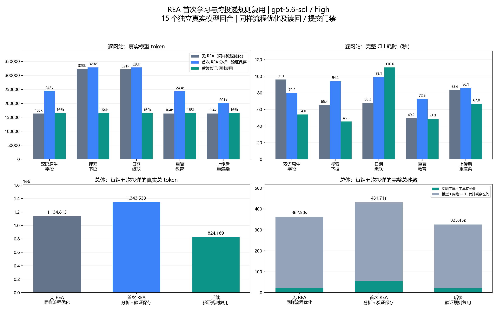
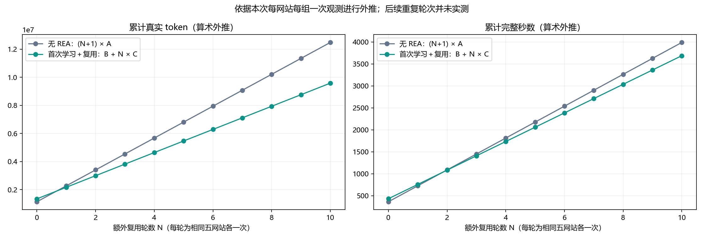

REA 首次分析与跨投递复用：真实模型全链路测试
gpt-5.6-sol / high · 5 类网站 × 3 组 · 15 次独立模型回合 · 全部通过独立审计
总体对比
| 组别 | 真实 token | 完整秒数 | 模型请求 | REA 调用 |
|---|
| 无 REA（同样流程优化） | 1,134,813 | 362.50 | 38 | 0 |
| 首次 REA＋规则验证保存 | 1,343,533 | 431.71 | 43 | 5 |
| 后续验证规则复用 | 824,169 | 325.45 | 30 | 0 |

每个网站均展示三组，没有均摊共享 token。
逐网站明细
| 网站 | 无 REA token | 首次 REA token | 复用 token | 无 REA 秒 | 首次 REA 秒 | 复用秒 |
|---|
| native-bilingual | 163,417 | 243,393 | 165,002 | 96.06 | 79.55 | 54.00 |
| search-dropdown | 322,782 | 328,551 | 164,236 | 65.41 | 94.18 | 45.50 |
| date-cascade | 321,086 | 328,086 | 164,660 | 68.25 | 99.08 | 110.64 |
| repeated-education | 163,894 | 242,656 | 164,876 | 49.22 | 72.83 | 48.27 |
| upload-rerender | 163,634 | 200,847 | 165,395 | 83.56 | 86.07 | 67.04 |
首次成本何时被复用抵消（算术预测）

后续重复轮次未实测。
口径和限制
- A 保留与 B/C 相同的流程优化，禁用 REA 和派生规则；它不是历史原始无优化流程，不能混用历史 49.3%/53.5% 降幅。
- B 从空规则库开始，真实 REA 捕获、模型解读、复杂路径探索、新空白页完整重放、服务端草稿验证及规则保存均计入成本。首次强制捕获仅为学习实验，生产仍按需。
- C 新上下文/浏览器/工作区只读取对应 B 的实际验证规则。与 A 使用相同的新合成资料；相比 B，学校、日期及其他申请值和 DOM ID 改变。无会话继承、无另行缓存预热、无旧填写状态或批准。
- 原生字段的通用语义映射本来已可自动完成，REA 不一定提供额外价值；规则命中仍实际执行当前输入、读回、草稿检查和提交门禁。IAB/Chrome 的规则核心可接线，但本次完整实测只覆盖现有 Playwright 备用适配器。
- 完整时间从 CLI 启动至回合退出，包含所有模型/网络等待、工具、REA、规则读写、重新验证和失败重试。记录工具错误 1 次、业务拒绝 2 次，均保留；不以模型口头说明作为成功证据。
- 真实总 token = input + output，cached input 属于 input、reasoning 属于 output，不重复累加。提供方缓存未控制，不把 token 比例换算为金额节省。
- 所有三组都执行当前读回、服务端草稿核对、审核哈希批准、真实 Submit 门禁、实际 mock 提交、独立回执和 Excel 读回。人工批准显式模拟，调研/登录/验证码/人工等待/草稿重开恢复未测。
- 每网站每组仅一次，反映模型决策、网络及机器负载波动，不声称统计显著性。实测期间也进行了本机 CI 验证，主机负载未隔离；不能把时间差全部归因于复用。首次组与其他组的合成事实有意不同以检验参数化，字段/选项数和结构相同。
- 普通原生字段本已自动处理，命中规则不保证 token 或时间改善。工具区间之外是模型/网络/CLI 编排剩余区间，不能继续拆成纯模型推理或单独网络等待。各网站的复用变化和单独累计成本阈值见 summary.json 的 per_site；无阈值表示本次观测不能推得收回成本。
- 累计学习成本预测：B + N×C 对比 (N+1)×A。按本轮总量计算，token 在额外复用 1 轮、时间在额外复用 2 轮达到不高于无 REA（None 表示未能推得）。N 每轮为五网站各一次；这只是算术外推，不是额外实测，也不是计费金额盈亏。
- 日期级联复用完整耗时 110.64 秒，高于无 REA 的 68.25 秒，慢回合未剔除。对应工具区间为 4.82 / 5.85 秒，模型/网络/CLI 剩余区间为 105.83 / 62.40 秒；不能将该差异单独归因于缓存或网络。